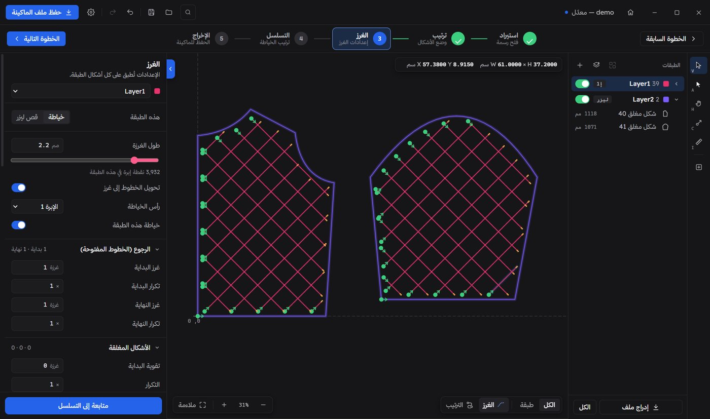

من الرسمة
لملف الماكينة
Stitchline بيفتح الباترون بتاعك، يحوّل خطوطه لغرز أو قص ليزر، يرتب الخياطة، ويحفظ ملف SLW اللي الماكينة بتقراه، على الفلاشة على طول.
1. افتح
ملف DXF أو Illustrator أو PLT أو DST أو DSB أو SLW. اسحبه على الشباك.
2. ظبّط
خياطة ولا ليزر لكل طبقة، طول الغرزة، وترتيب الخياطة.
3. احفظ
ملف الماكينة SLW، وعلى الفلاشة لو حابب.
الباترون بيضيّع ساعات بين برامج قديمة وملفات مش بتفتح. Stitchline بيحوّله لملف ماكينة في دقايق.
الغرز
كل طبقة ليها إعداداتها: طول الغرزة، الرجوع في البداية والنهاية، تقوية الأشكال المقفولة، تهدية ورص الغرز عند الزوايا، وأجزاء زجزاج وطول خاص.
- طول غرزة من 0.1 مم.
- أبطأ وأكثف عند الزوايا.
- أجزاء زجزاج ورجوع.
الليزر على الإبرة 3
خلّي أي طبقة قص ليزر. Stitchline بيفحص كل مسار على الأجزاء الصغيرة والخطوط المقطّعة اللي هتبطّأ القص، ويصلّحها بضغطة، من غير ما يبعد عن رسمتك أكتر من 0.05 مم.
- بيلاقي المسارات البطيئة.
- بيوصّل الخطوط اللي بتلمس بعض.
- تراجع واحد يرجّعه زي ما كان.
الليزر هيبطّأ في 14 مكانالمسارات نضيفة: سرعة كاملة
9 أجزاء أقل من 0.5 مم · 5 أطراف خطوط بتلمس بعض2 قصة منفصلة · 79 نقطة · 0 أجزاء صغيرة
الترتيب والمحاكاة
اسحب الأشكال بالترتيب اللي عايزه، أو رتّبها صفوف أو أعمدة أو بأقصر مسافة. وبعدين شغّل المحاكاة وشوف الإبرة بتخيّط الشغل قبل الماكينة.
- صفوف أو أعمدة، في أي اتجاه.
- أقل مشوار للإبرة.
- محاكاة تقدر تقدّم وترجّع فيها.
افتح أي رسمة
رسومات كاد، ملفات Illustrator، ملفات بلوتر، ملفات ماكينات تطريز، وملفات SLW نفسها. وتصدّر تاني لـ DXF و PLT و SVG و CSV.
اقرا الدليلكل ملف SLW بيطلّعه Stitchline بيتقارن سجل بسجل بالملف اللي برنامج Sew_Soft الأصلي حفظه من نفس الرسمة.

ماكينتك بتقرا SLW. Stitchline بيعمل الملف.
أسئلة بتتسأل كتير
أي حاجة تانية موجودة في دليل المستخدم المصوّر.
بيشتغل مع أنهي ماكينات؟
ماكينات الخياطة بالباترون اللي بتقرا ملفات SLW، صيغة برنامج Sew_Soft، ومنها الماكينات اللي فيها رأس ليزر على الإبرة 3.
الملف بيطلع زي ملف البرنامج الأصلي؟
أيوه. على 15 رسمة مرجعية سجلات SLW بتطابق سجلات البرنامج الأصلي، ما عدا سجل المفتاح اللي فيه التاريخ. المواضع ممكن تفرق 10 ميكرومتر في الأماكن اللي البرنامج الأصلي بيقرّب فيها بشكل مختلف.
محتاج إيه عشان يشتغل؟
ويندوز 10 أو 11. المثبّت حوالي 2.5 ميجا، بيتثبّت لحسابك من غير صلاحيات أدمن، وبينزّل WebView2 بس لو مش موجود على الويندوز.
أقدر أحفظ على الفلاشة على طول؟
أيوه. من خطوة الإخراج اختار الفلاشة واحفظ ملف SLW عليها، جاهز للماكينة.
لو غلطت؟
التراجع والإعادة شغالين على كل تعديل، والمشروع بيتحفظ تلقائي وانت شغال.